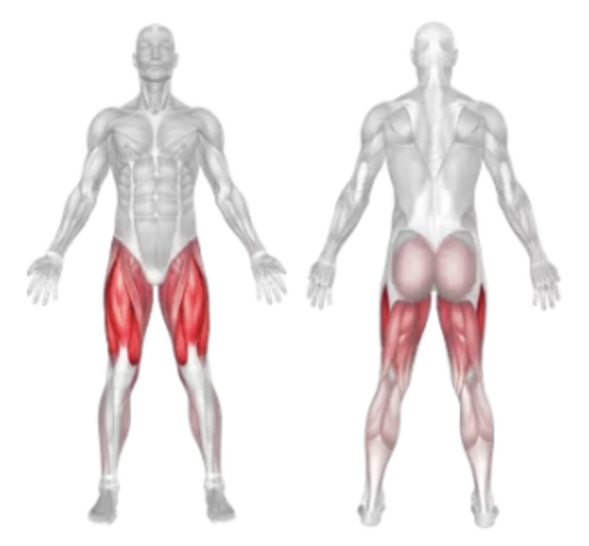
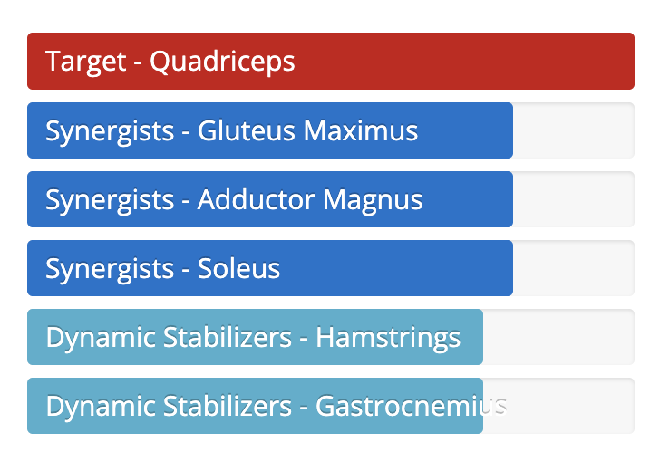

Setup
- Sit down on the leg press machine and place your feet shoulder-width apart on the platform.
- Adjust the seat and back support so your knees are at a 90-degree angle in the starting position.
- Keep your feet flat and ensure heels are not hanging off the platform.
- Grip the side handles for support and disengage the safety locks.
Execution
- Push: Press the platform upward by extending your knees and hips without locking them out completely.
- Control: Slowly lower the platform back down until your knees are at about 90 degrees.
- Repeat for the desired number of reps while keeping your back pressed against the pad.
Tips for Effectiveness
- Full Range: Avoid short reps; lower deep but safely to maximize muscle activation.
- Knees in Line: Keep your knees aligned with your toes to avoid unnecessary strain.
- Flat Feet: Maintain full contact of your feet with the platform at all times.
- Controlled Speed: Don’t bounce the weights at the bottom — stay in control.
Benefits of Leg Press
- Builds Lower Body Strength: Great for targeting quads, hamstrings, glutes, and calves.
- Reduced Spinal Load: Safer for the lower back compared to barbell squats.
- Muscle Isolation: Allows focused training of the legs without upper body involvement.
- Progressive Overload: Easy to increase resistance gradually for muscle growth.
Muscles Worked in Leg Press

